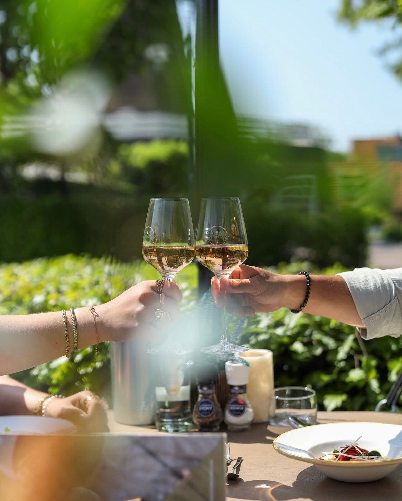
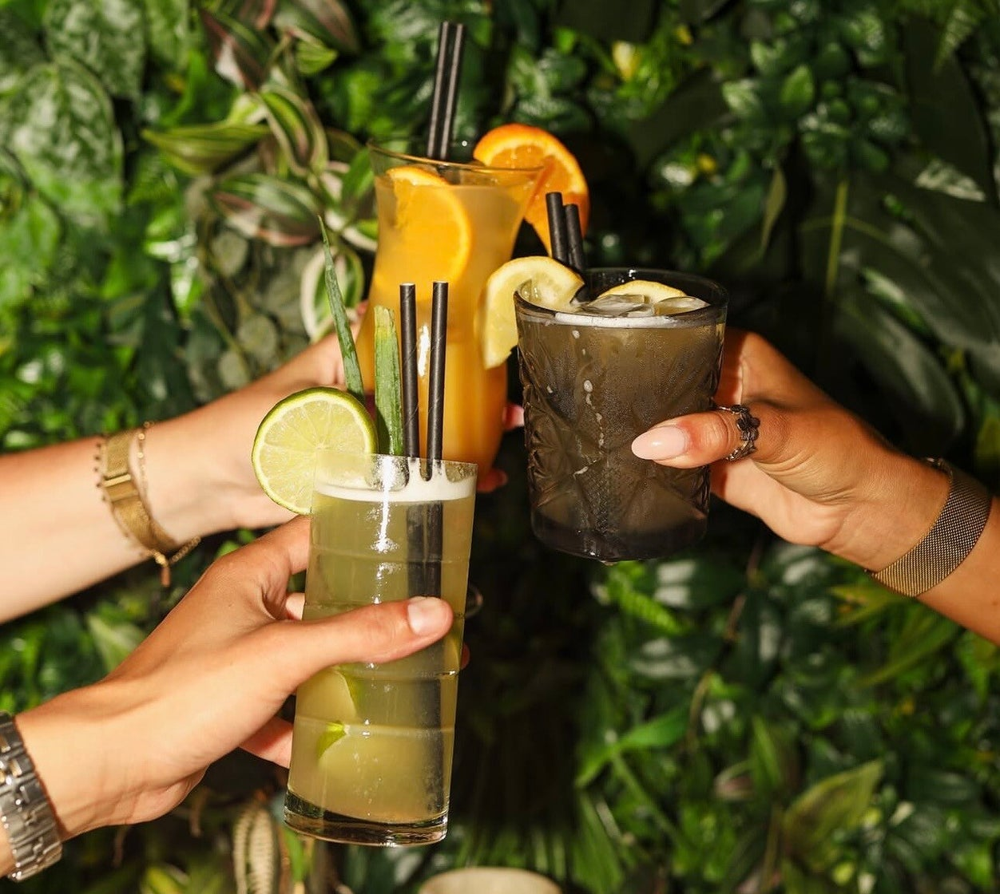

Waar smaak en gezelligheid samenkomen
Restaurant Grillig in Kaatsheuvel. Overdag lunch, in de middag een borrel, 's avonds à la carte met zo veel mogelijk verse gerechten. Geopend vanaf 09:30.

Welkom bij Restaurant Grillig
Ontdek de gezellige sfeer van Restaurant Grillig, gelegen in Kaatsheuvel. Wij nodigen u uit voor een onvergetelijke eetervaring met zorgvuldig bereide, heerlijke gerechten en een warme sfeer. Wij richten ons vooral op kwaliteit en bereiden zo veel mogelijk vers. Wij verheugen ons op uw bezoek!
Ons verhaal
Bij Restaurant Grillig geloven we in de kracht van verse ingrediënten en de passie van koken. Ons verhaal begon met een droom om een plek te creëren waar mensen kunnen genieten van heerlijke maaltijden in een sfeervolle ambiance. Elk gerecht is een reflectie van onze toewijding aan kwaliteit.
Onze ambiance
Laat u meeslepen door de warme en uitnodigende sfeer van Restaurant Grillig. Perfect voor een romantisch diner, een gezellige avond met vrienden of een speciale gelegenheid.



Kerst bij Grillig
Op eerste en tweede kerstdag werken we met drie tijdsloten:
- 12:00 tot 14:45
- 15:00 tot 17:45
- vanaf 18:30 tot sluitingstijd
Online reserveren is met Kerst niet mogelijk. Bel 0416-744083.

Werken bij Grillig
Ben jij gastvrij, leergierig, enthousiast en een teamplayer? Wij zoeken mensen achter de bar, in de bediening en in de keuken.
Parttime
- Bediening en bar
- Keuken
- Afwas
Fulltime
- Bediening
- Keuken
Mail een korte motivatie naar info@restaurantgrillig.nl of bel 0416-744083.
Openingstijden
| Maandag | 09:30 tot 23:00 |
|---|---|
| Dinsdag | gesloten |
| Woensdag tot en met zondag | 09:30 tot 23:00 |
Wij zijn geopend vanaf 09:30.
Reserveren en route
Bel 0416-744083 om een tafel te reserveren.
Restaurant Grillig
Horst 1
5171 RA Kaatsheuvel
E-mail: info@restaurantgrillig.nl